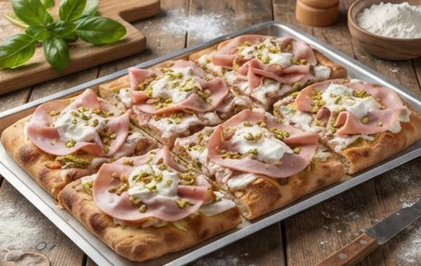
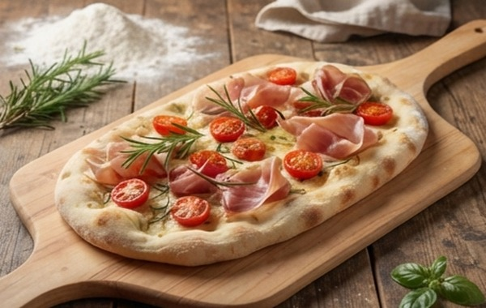
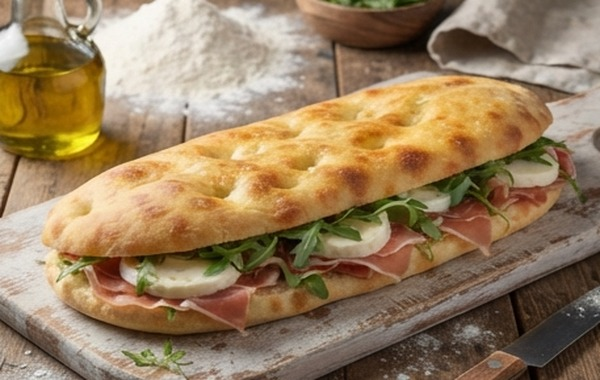
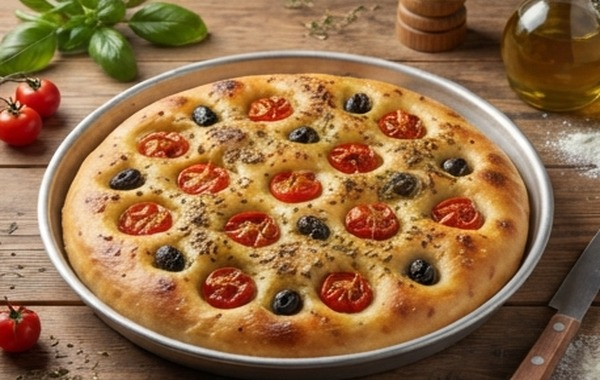
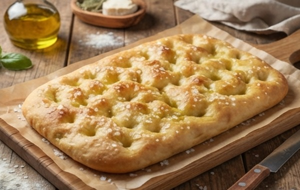

1. Seleziona lo stile di impasto
Napoletana
Cornicione pronunciato e cottura fulminea.

80% Idr.Romana in Teglia
Alta idratazione, croccante sotto e soffice dentro.

62% Idr.Tonda Classica
Sottile e croccante con olio EVO e zucchero.

68% Idr.Panuozzo
Formato allungato, cottura e farcitura doppia.

Semola + PatateFocaccia Pugliese
Barese con semola rimacinata, patata lessa e pomodorini.

Lievitino + SalamoiaFocaccia Ligure
Con lievitino notturno, fossette e salamoia lucida.
2. Parametri Impasto, Forno & Metodo
3. Farciture & Condimenti (Multi-Gusto)
Distribuisci i gusti sulle pizze/teglie da preparare: le dosi dei condimenti si sommano automaticamente.
🛒 Lista Condimenti Totali da Preparare
🔥 In cottura • 🌿 A crudo a fine cottura4. Tabella Ingredienti Consigliati
Dosi calcolate automaticamente al grammo
Dettagli Aggiuntivi
📋 Guida Passo-Passo & Setup Forno
Procedura ottimizzata per Napoletana • Fornetto Elettrico • Caputo Pizzeria • Planetaria (Kenwood XL)
Napoletana
Impostazioni predefinite consigliate per questo stile e tipo di forno.
Guida Cottura: Fornetto Elettrico vs Forno di Casa
Consigli pratici per ottenere il massimo risultato sia con un fornetto ad alta temperatura (450°C) sia con un tradizionale forno da cucina (250°C).
Fornetto Elettrico (Ooni Volt / Effeuno)
Preriscaldamento: Accendi almeno 20–30 minuti prima per mandare in temperatura la pietra refrattaria.
Napoletana & Panuozzo: Sfrutta Cielo a 400–450°C e Platea a 380–420°C per una cottura esplosiva in 90 secondi.
Teglia & Focacce (Pugliese / Ligure): Abbassa Cielo a 250–280°C e Platea a 250–300°C (oppure usa il forno di casa per teglie grandi da 30×40 cm).
Normale Forno da Cucina (Max 250°C)
Pizza al piatto a 250°C: Usa sempre Olio EVO (2%) e Zucchero/Malto (1%) nell'impasto per evitare che diventi pallida o secca. Cuoci sul ripiano più basso (o su pietra refrattaria/leccarda rovesciata rovente) prima solo con pomodoro per 6–7 minuti, poi aggiungi mozzarella e condimenti per gli ultimi 2–3 minuti.
Focaccia Pugliese & Ligure: Il forno di casa è perfetto! Ripiano basso a 250°C statico per la Pugliese (15–18 min) e ripiano centrale a 240°C ventilato o 230°C statico per la Ligure (15–18 min).